1. The following are signs and symptoms certain disease
(i) Pain in the chest
(u) Loss of appetite
(iii) Pain in the joint
(iv) Severe headache
(v) Prolonged dry cough
2. Which one of the following statements about reproduction in human beings is CORRECT?
3. The diagram below shows a set - up used to investigate properties of different soils
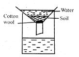
4. Which one of the following is NOT a characteristic of all living things? They
5. The chart below is a simple classification of plants
6. In which of the following ways is water not used sparingly?
7. Std. 4 pupils carried out an experiment on pressure in liquids as shown below
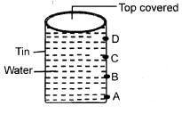
8. The diagram below shows an improvised liquid thermometer
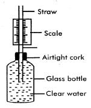
9. Which one of the following pairs of diseases are caused by virus?
10. Which one of the following shows the process of formation of shadows and rainbows respectively?
11. The following are reasons for storing medicines in well labelled containers EXCEPT one. Which one? To avoid
12. Carnivorous mammals have well spaced carnassial teeth in order to
13. The table below gives information about flowers Q, R, S and T
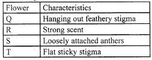
14. Which one of the following is NOT an adaptation of plants growing in arid areas?
15. Which one of the following is NOT a physical change experienced by girls during adolescence?
16. A group of class 7 pupil did the experiment below
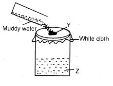
17. In which of the following pairs of process has temperature been increased on the states of matter?
18. Which one of the following does NOT happen when inhaling is taking place?
19. A farmer who apply fertilizer excessively on his farm is most likely to pollute
20. The material used in making green manure should have three of the following characteristics except one. Which one is it?
21. Which one of the following DOES NOT function in the same way as a bicycle dynamo?
22. In which of the following machines does the effort move through the same distance as the load when in use?
23. An expectant mother should ensure a high intake of proteins in her diet in order to
24. Which of the following substances cannot pollute air?
25. Which one of the following diseases can be best controlled by covering pit latrines after use?
26. The diagram below shows the solar system.
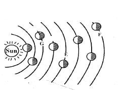
27. The following activities are carried out when making a simple machine that can be used to compare masses of different objects but not in the correct order
(i) Suspend the arm to find balance point
(ii) Make a base, a stand and the arm
(iii) Fix the stand and the arm to the base
(iv) Suspend tins on both sides of the arm
28. The following are reasons for preserving food except
29. Which one of the following statements is WRONG about the force that hinders motion?
30. Which one of the following is NOT a reason for storing tools properly? To
31. The diagram below shows a bottle top that was placed on the cardboard
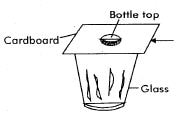
32. Which one of the following need NOT to be the same when investigating evaporation of different liquids? The
33. Which one of the following would not sink in water even when its shape is changed?
34. In a pie chart that represents gases that make up air the gases that take the largest percentage are
35. The diagram below shows a growing plant that was used by a group of class 5 pupils to investigate a certain process in plants
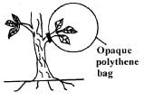
36. The chart below shows classification of animals
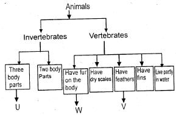
37. Which one of the following groups of animal feeds mainly provides a diet of fats, proteins and carbohydrates respectively?
38. Which one of the following statements about states of matter is NOT CORRECT?
39. Class 8 pupils added soap to equal samples of water from different sources W, X, Y and Z. They recorded the amount of soap used to lather the water as shown below
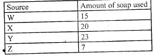
40. Which one of the following components of blood is CORRECTLY matched with its function?
41. Which one of the following statements about cavities is NOT CORRECT? They
42. Which one of the following is NOT an effect of pests on crops?
43. Which one of the following is TRUE about sound?
44. Which one of the following is NOT a source of light?
45. In which of the following activities is non-renewable energy in use?
46. Which one of the following consists of foods that are mainly for protection against diseases?
47. Which one of the following pairs of mixtures can be separated by decanting?
48. A candle was placed in a beaker of water and covered with a glass as shown in the diagram below
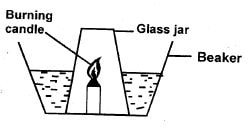
49. During cold weather birds fluff out their feather mainly to
50. Which one of the following groups of food is NOT balanced?